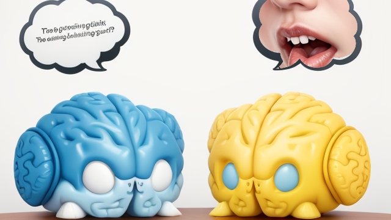

為什麼學AI很難
為什麼學AI很難
正詠詞:a wizard using computer
難點：找到方向
| 要先找到想解決的問題或挑戰 |
正詠詞: a complex labyrinth maze
難點：第二階段知識
|  | 第二階段知識是你可以靈活運用的第一階段知識 |
正詠詞: two brain, one brain having text, another brain thinking oral talking
反詠詞增加: human, women,
Reference
難點：跨領域整合
| AI是一種第二階段知識，加上原本的領域第二階段，需要跨領域的整合 |
正詠詞: juggler, multi-arms, 6 arms, playing guitar, playing ball, playing violin, playing piano, playing drum
推薦影片
作業一
| 使用AI生產做一件事，可能是寫小說、寫程式、畫圖、...... 基於這個第一版產出，你去尋找某個領域的知識，想想怎麼結合與改進 |
正詠詞: using magic
作業二
| 找到一個可以持續改進、持續生產的循環 ex: AI寫小劇本，然後去看劇本知識，比如幕的規劃，再請AI幫忙規劃幕之間的關係、...... ex: 跟AI學hello world，然後請AI教更多的程式概念比如變數迴圈，再請AI寫變數迴圈的demo code、...... |
正詠詞: research magic
詠唱詞
- Stable Diffusion 基本設定
- revAnimated
- 反詠詞： lowres, text, error, missing fingers, extra digit, fewer digits, cropped, worst quality, low quality, normal quality, jpeg artifacts,signature, watermark, username, blurry, artist name,
- ChatGPT詠唱過程